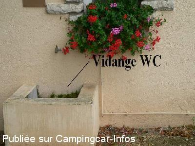

ASN = Aire de services avec stationnement nuit possible de :
ARC EN BARROIS
(N° 658)
Accès/adresse :
Rue Anatole Gabeur D3
52210 ARC EN BARROIS
52210 ARC EN BARROIS
Latitude : (Nord) 47.9508° Décimaux ou 47° 57′ 2′′
Longitude : (Est) 5.00575° Décimaux ou 5° 0′ 20′′
Tarif : 2013
Stationnement, services : 5 €
Le responsable du camping passe pour le règlement
Type de borne : Artisanale
Services :


Autres informations :
Ouvert du 01/04 au 30/09
Pas de services en période de gel
Tél mairie : +33(0)325 025 133

Le 30/08/2008 par Jipé/ vidange WC
Le 30/08/2008 par JIpé / vidanges ( eaux usées)
Le 30/08/2008 par Jipé/ robinet d'eau potable
Le 30/08/2008 par Jipé/ Stationnement
de
Armend1942g
le 25/08/2013 :
§
Aire de camping car jouxtant le camping. Permet l'accès pour 5 euros aux services du camping WC douches
vidanges eaux grises artisanale peu pratique Jeux accessibles Un bon point pour la commune
§
Aire de camping car jouxtant le camping. Permet l'accès pour 5 euros aux services du camping WC douches
vidanges eaux grises artisanale peu pratique Jeux accessibles Un bon point pour la commune
de
Andy Leigh-Cattrall
le 17/12/2008 :
Absolutely beautiful and quiet aire and village, we visited in August 2008 and wished we could have stayed longer. You can park on the hardstanding or the grass. There are hot showers etc in toilet block which you can use. Lady comes around early evening to collect money.
Absolutely beautiful and quiet aire and village, we visited in August 2008 and wished we could have stayed longer. You can park on the hardstanding or the grass. There are hot showers etc in toilet block which you can use. Lady comes around early evening to collect money.
de
Jipé
le 01/08/2008 :
Aire agréable. Salle des fêtes juste en face: possibilité AG CCI.
Aire agréable. Salle des fêtes juste en face: possibilité AG CCI.